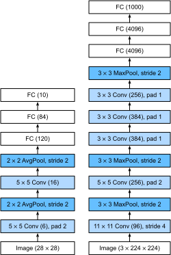

Deep Convolutional Neural Networks (AlexNet)
:label:sec_alexnet
Although CNNs were well known in the computer vision and machine learning communities following the introduction of LeNet :cite:LeCun.Jackel.Bottou.ea.1995, they did not immediately dominate the field. Although LeNet achieved good results on early small datasets, the performance and feasibility of training CNNs on larger, more realistic datasets had yet to be established. In fact, for much of the intervening time between the early 1990s and the watershed results of 2012 :cite:Krizhevsky.Sutskever.Hinton.2012, neural networks were often surpassed by other machine learning methods, such as kernel methods :cite:Scholkopf.Smola.2002, ensemble methods :cite:Freund.Schapire.ea.1996, and structured estimation :cite:Taskar.Guestrin.Koller.2004.
For computer vision, this comparison is perhaps not entirely accurate. That is, although the inputs to convolutional networks consist of raw or lightly-processed (e.g., by centering) pixel values, practitioners would never feed raw pixels into traditional models. Instead, typical computer vision pipelines consisted of manually engineering feature extraction pipelines, such as SIFT :cite:Lowe.2004, SURF :cite:Bay.Tuytelaars.Van-Gool.2006, and bags of visual words :cite:Sivic.Zisserman.2003. Rather than learning the features, the features were crafted. Most of the progress came from having more clever ideas for feature extraction on the one hand and deep insight into geometry :cite:Hartley.Zisserman.2000 on the other. The learning algorithm was often considered an afterthought.
Although some neural network accelerators were available in the 1990s, they were not yet sufficiently powerful to make deep multichannel, multilayer CNNs with a large number of parameters. For instance, NVIDIA's GeForce 256 from 1999 was able to process at most 480 million floating-point operations, such as additions and multiplications, per second (MFLOPS), without any meaningful programming framework for operations beyond games. Today's accelerators are able to perform in excess of 1000 TFLOPs per device. Moreover, datasets were still relatively small: OCR on 60,000 low-resolution $28 \times 28$ pixel images was considered a highly challenging task. Added to these obstacles, key tricks for training neural networks including parameter initialization heuristics :cite:Glorot.Bengio.2010, clever variants of stochastic gradient descent :cite:Kingma.Ba.2014, non-squashing activation functions :cite:Nair.Hinton.2010, and effective regularization techniques :cite:Srivastava.Hinton.Krizhevsky.ea.2014 were still missing.
Thus, rather than training end-to-end (pixel to classification) systems, classical pipelines looked more like this:
- Obtain an interesting dataset. In the early days, these datasets required expensive sensors. For instance, the Apple QuickTake 100 of 1994 sported a whopping 0.3 megapixel (VGA) resolution, capable of storing up to 8 images, all for the price of $1000.
- Preprocess the dataset with hand-crafted features based on some knowledge of optics, geometry, other analytic tools, and occasionally on the serendipitous discoveries by lucky graduate students.
- Feed the data through a standard set of feature extractors such as the SIFT (scale-invariant feature transform) :cite:
Lowe.2004, the SURF (speeded up robust features) :cite:Bay.Tuytelaars.Van-Gool.2006, or any number of other hand-tuned pipelines. OpenCV still provides SIFT extractors to this day! - Dump the resulting representations into your favorite classifier, likely a linear model or kernel method, to train a classifier.
If you spoke to machine learning researchers, they would reply that machine learning was both important and beautiful. Elegant theories proved the properties of various classifiers :cite:boucheron2005theory and convex optimization :cite:Boyd.Vandenberghe.2004 had become the mainstay for obtaining them. The field of machine learning was thriving, rigorous, and eminently useful. However, if you spoke to a computer vision researcher, you would hear a very different story. The dirty truth of image recognition, they would tell you, is that features, geometry :cite:Hartley.Zisserman.2000,hartley2009global, and engineering, rather than novel learning algorithms, drove progress. Computer vision researchers justifiably believed that a slightly bigger or cleaner dataset or a slightly improved feature-extraction pipeline mattered far more to the final accuracy than any learning algorithm.
using Pkg; Pkg.activate("../../d2lai")
using d2lai
using Flux
using CUDA, cuDNN Activating project at `c:\Users\abhar\Personal\d2l-julia\d2lai`Representation Learning
Another way to cast the state of affairs is that the most important part of the pipeline was the representation. And up until 2012 the representation was calculated mostly mechanically. In fact, engineering a new set of feature functions, improving results, and writing up the method all featured prominently in papers. SIFT :cite:Lowe.2004, SURF :cite:Bay.Tuytelaars.Van-Gool.2006, HOG (histograms of oriented gradient) :cite:Dalal.Triggs.2005, bags of visual words :cite:Sivic.Zisserman.2003, and similar feature extractors ruled the roost.
Another group of researchers, including Yann LeCun, Geoff Hinton, Yoshua Bengio, Andrew Ng, Shun-ichi Amari, and Juergen Schmidhuber, had different plans. They believed that features themselves ought to be learned. Moreover, they believed that to be reasonably complex, the features ought to be hierarchically composed with multiple jointly learned layers, each with learnable parameters. In the case of an image, the lowest layers might come to detect edges, colors, and textures, by analogy with how the visual system in animals processes its input. In particular, the automatic design of visual features such as those obtained by sparse coding :cite:olshausen1996emergence remained an open challenge until the advent of modern CNNs. It was not until :citet:Dean.Corrado.Monga.ea.2012,le2013building that the idea of generating features from image data automatically gained significant traction.
The first modern CNN :cite:Krizhevsky.Sutskever.Hinton.2012, named AlexNet after one of its inventors, Alex Krizhevsky, is largely an evolutionary improvement over LeNet. It achieved excellent performance in the 2012 ImageNet challenge.
 :width:
:width:400px :label:fig_filters
Interestingly, in the lowest layers of the network, the model learned feature extractors that resembled some traditional filters. :numref:fig_filters shows lower-level image descriptors. Higher layers in the network might build upon these representations to represent larger structures, like eyes, noses, blades of grass, and so on. Even higher layers might represent whole objects like people, airplanes, dogs, or frisbees. Ultimately, the final hidden state learns a compact representation of the image that summarizes its contents such that data belonging to different categories can be easily separated.
AlexNet (2012) and its precursor LeNet (1995) share many architectural elements. This begs the question: why did it take so long? A key difference was that, over the previous two decades, the amount of data and the computing power available had increased significantly. As such AlexNet was much larger: it was trained on much more data, and on much faster GPUs compared to the CPUs available in 1995.
Missing Ingredient: Data
Deep models with many layers require large amounts of data in order to enter the regime where they significantly outperform traditional methods based on convex optimizations (e.g., linear and kernel methods). However, given the limited storage capacity of computers, the relative expense of (imaging) sensors, and the comparatively tighter research budgets in the 1990s, most research relied on tiny datasets. Numerous papers relied on the UCI collection of datasets, many of which contained only hundreds or (a few) thousands of images captured in low resolution and often with an artificially clean background.
In 2009, the ImageNet dataset was released :cite:Deng.Dong.Socher.ea.2009, challenging researchers to learn models from 1 million examples, 1000 each from 1000 distinct categories of objects. The categories themselves were based on the most popular noun nodes in WordNet :cite:Miller.1995. The ImageNet team used Google Image Search to prefilter large candidate sets for each category and employed the Amazon Mechanical Turk crowdsourcing pipeline to confirm for each image whether it belonged to the associated category. This scale was unprecedented, exceeding others by over an order of magnitude (e.g., CIFAR-100 has 60,000 images). Another aspect was that the images were at relatively high resolution of $224 \times 224$ pixels, unlike the 80 million-sized TinyImages dataset :cite:Torralba.Fergus.Freeman.2008, consisting of $32 \times 32$ pixel thumbnails. This allowed for the formation of higher-level features. The associated competition, dubbed the ImageNet Large Scale Visual Recognition Challenge :cite:russakovsky2015imagenet, pushed computer vision and machine learning research forward, challenging researchers to identify which models performed best at a greater scale than academics had previously considered. The largest vision datasets, such as LAION-5B :cite:schuhmann2022laion contain billions of images with additional metadata.
Missing Ingredient: Hardware
Deep learning models are voracious consumers of compute cycles. Training can take hundreds of epochs, and each iteration requires passing data through many layers of computationally expensive linear algebra operations. This is one of the main reasons why in the 1990s and early 2000s, simple algorithms based on the more-efficiently optimized convex objectives were preferred.
Graphical processing units (GPUs) proved to be a game changer in making deep learning feasible. These chips had earlier been developed for accelerating graphics processing to benefit computer games. In particular, they were optimized for high throughput $4 \times 4$ matrix–vector products, which are needed for many computer graphics tasks. Fortunately, the math is strikingly similar to that required for calculating convolutional layers. Around that time, NVIDIA and ATI had begun optimizing GPUs for general computing operations :cite:Fernando.2004, going as far as to market them as general-purpose GPUs (GPGPUs).
To provide some intuition, consider the cores of a modern microprocessor (CPU). Each of the cores is fairly powerful running at a high clock frequency and sporting large caches (up to several megabytes of L3). Each core is well-suited to executing a wide range of instructions, with branch predictors, a deep pipeline, specialized execution units, speculative execution, and many other bells and whistles that enable it to run a large variety of programs with sophisticated control flow. This apparent strength, however, is also its Achilles heel: general-purpose cores are very expensive to build. They excel at general-purpose code with lots of control flow. This requires lots of chip area, not just for the actual ALU (arithmetic logical unit) where computation happens, but also for all the aforementioned bells and whistles, plus memory interfaces, caching logic between cores, high-speed interconnects, and so on. CPUs are comparatively bad at any single task when compared with dedicated hardware. Modern laptops have 4–8 cores, and even high-end servers rarely exceed 64 cores per socket, simply because it is not cost-effective.
By comparison, GPUs can consist of thousands of small processing elements (NIVIDA's latest Ampere chips have up to 6912 CUDA cores), often grouped into larger groups (NVIDIA calls them warps). The details differ somewhat between NVIDIA, AMD, ARM and other chip vendors. While each core is relatively weak, running at about 1GHz clock frequency, it is the total number of such cores that makes GPUs orders of magnitude faster than CPUs. For instance, NVIDIA's recent Ampere A100 GPU offers over 300 TFLOPs per chip for specialized 16-bit precision (BFLOAT16) matrix-matrix multiplications, and up to 20 TFLOPs for more general-purpose floating point operations (FP32). At the same time, floating point performance of CPUs rarely exceeds 1 TFLOPs. For instance, Amazon's Graviton 3 reaches 2 TFLOPs peak performance for 16-bit precision operations, a number similar to the GPU performance of Apple's M1 processor.
There are many reasons why GPUs are much faster than CPUs in terms of FLOPs. First, power consumption tends to grow quadratically with clock frequency. Hence, for the power budget of a CPU core that runs four times faster (a typical number), you can use 16 GPU cores at $\frac{1}{4}$ the speed, which yields $16 \times \frac{1}{4} = 4$ times the performance. Second, GPU cores are much simpler (in fact, for a long time they were not even able to execute general-purpose code), which makes them more energy efficient. For instance, (i) they tend not to support speculative evaluation, (ii) it typically is not possible to program each processing element individually, and (iii) the caches per core tend to be much smaller. Last, many operations in deep learning require high memory bandwidth. Again, GPUs shine here with buses that are at least 10 times as wide as many CPUs.
Back to 2012. A major breakthrough came when Alex Krizhevsky and Ilya Sutskever implemented a deep CNN that could run on GPUs. They realized that the computational bottlenecks in CNNs, convolutions and matrix multiplications, are all operations that could be parallelized in hardware. Using two NVIDIA GTX 580s with 3GB of memory, either of which was capable of 1.5 TFLOPs (still a challenge for most CPUs a decade later), they implemented fast convolutions. The cuda-convnet code was good enough that for several years it was the industry standard and powered the first couple of years of the deep learning boom.
AlexNet
AlexNet, which employed an 8-layer CNN, won the ImageNet Large Scale Visual Recognition Challenge 2012 by a large margin :cite:Russakovsky.Deng.Huang.ea.2013. This network showed, for the first time, that the features obtained by learning can transcend manually-designed features, breaking the previous paradigm in computer vision.
The architectures of AlexNet and LeNet are strikingly similar, as :numref:fig_alexnet illustrates. Note that we provide a slightly streamlined version of AlexNet removing some of the design quirks that were needed in 2012 to make the model fit on two small GPUs.
 :label:fig_alexnet
There are also significant differences between AlexNet and LeNet. First, AlexNet is much deeper than the comparatively small LeNet-5. AlexNet consists of eight layers: five convolutional layers, two fully connected hidden layers, and one fully connected output layer. Second, AlexNet used the ReLU instead of the sigmoid as its activation function. Let's delve into the details below.
Architecture
In AlexNet's first layer, the convolution window shape is $11\times11$. Since the images in ImageNet are eight times taller and wider than the MNIST images, objects in ImageNet data tend to occupy more pixels with more visual detail. Consequently, a larger convolution window is needed to capture the object. The convolution window shape in the second layer is reduced to $5\times5$, followed by $3\times3$. In addition, after the first, second, and fifth convolutional layers, the network adds max-pooling layers with a window shape of $3\times3$ and a stride of 2. Moreover, AlexNet has ten times more convolution channels than LeNet.
After the final convolutional layer, there are two huge fully connected layers with 4096 outputs. These layers require nearly 1GB model parameters. Because of the limited memory in early GPUs, the original AlexNet used a dual data stream design, so that each of their two GPUs could be responsible for storing and computing only its half of the model. Fortunately, GPU memory is comparatively abundant now, so we rarely need to break up models across GPUs these days (our version of the AlexNet model deviates from the original paper in this aspect).
Activation Functions
Furthermore, AlexNet changed the sigmoid activation function to a simpler ReLU activation function. On the one hand, the computation of the ReLU activation function is simpler. For example, it does not have the exponentiation operation found in the sigmoid activation function. On the other hand, the ReLU activation function makes model training easier when using different parameter initialization methods. This is because, when the output of the sigmoid activation function is very close to 0 or 1, the gradient of these regions is almost 0, so that backpropagation cannot continue to update some of the model parameters. By contrast, the gradient of the ReLU activation function in the positive interval is always 1 (:numref:subsec_activation-functions). Therefore, if the model parameters are not properly initialized, the sigmoid function may obtain a gradient of almost 0 in the positive interval, meaning that the model cannot be effectively trained.
Capacity Control and Preprocessing
AlexNet controls the model complexity of the fully connected layer by dropout (:numref:sec_dropout), while LeNet only uses weight decay. To augment the data even further, the training loop of AlexNet added a great deal of image augmentation, such as flipping, clipping, and color changes. This makes the model more robust and the larger sample size effectively reduces overfitting. See :citet:Buslaev.Iglovikov.Khvedchenya.ea.2020 for an in-depth review of such preprocessing steps.
struct AlexNet{N} <: AbstractClassifier
net::N
end
function AlexNet(; lr = 0.01, num_classes = 10)
net = Flux.@autosize (224, 224, 1, 1) Chain(
Conv((11, 11), _ => 96, relu, stride = 4, pad = 1),
MaxPool((3,3), stride = 2),
Conv((5, 5), _ => 256, relu, pad = 2),
MaxPool((3,3), stride=2),
Conv((3, 3), _ => 384, relu, pad = 1),
Conv((3, 3), _ => 384, relu, pad = 1),
Conv((3, 3), _ => 256, relu, pad = 1),
MaxPool((3,3), stride=2),
Flux.flatten,
Dense(_ => 4096,), relu, Dropout(0.5),
Dense(4096 => 4096), relu, Dropout(0.5),
Dense(4096 => num_classes)
)
end
Flux.@layer AlexNetmodel = AlexNet(num_classes = 10)Chain(
Conv((11, 11), 1 => 96, relu, pad=1, stride=4), # 11_712 parameters
MaxPool((3, 3), stride=2),
Conv((5, 5), 96 => 256, relu, pad=2), # 614_656 parameters
MaxPool((3, 3), stride=2),
Conv((3, 3), 256 => 384, relu, pad=1), # 885_120 parameters
Conv((3, 3), 384 => 384, relu, pad=1), # 1_327_488 parameters
Conv((3, 3), 384 => 256, relu, pad=1), # 884_992 parameters
MaxPool((3, 3), stride=2),
Flux.flatten,
Dense(6400 => 4096), # 26_218_496 parameters
NNlib.relu,
Dropout(0.5),
Dense(4096 => 4096), # 16_781_312 parameters
NNlib.relu,
Dropout(0.5),
Dense(4096 => 10), # 40_970 parameters
) # Total: 16 arrays, 46_764_746 parameters, 178.396 MiB.data = d2lai.FashionMNISTData(batchsize = 128, resize = (224, 224))
opt = Descent(0.1)
trainer = Trainer(model, data, opt; max_epochs = 10, gpu = true, board_yscale = :identity)
t = d2lai.fit(trainer) d2lai.FashionMNISTData{@NamedTuple{features::Array{Float32, 3}, targets::Vector{Int64}}, @NamedTuple{features::Array{Float32, 3}, targets::Vector{Int64}}, Vector{String}, @NamedTuple{batchsize::Int64}}((features = Float32[0.0 0.0 … 0.0 0.0; 0.0 0.0 … 0.0 0.0; … ; 0.0 0.0 … 0.0 0.0; 0.0 0.0 … 0.0 0.0;;; 0.0 0.0 … 0.0 0.0; 0.0 0.0 … 0.0 0.0; … ; 0.0 0.0 … 0.0 0.0; 0.0 0.0 … 0.0 0.0;;; 0.0 0.0 … 0.0 0.0; 0.0 0.0 … 0.0 0.0; … ; 0.0 0.0 … 0.0 0.0; 0.0 0.0 … 0.0 0.0;;; … ;;; 0.0 0.0 … 0.0 0.0; 0.0 0.0 … 0.0 0.0; … ; 0.0 0.0 … 0.0 0.0; 0.0 0.0 … 0.0 0.0;;; 0.0 0.0 … 0.0 0.0; 0.0 0.0 … 0.0 0.0; … ; 0.0 0.0 … 0.0 0.0; 0.0 0.0 … 0.0 0.0;;; 0.0 0.0 … 0.0 0.0; 0.0 0.0 … 0.0 0.0; … ; 0.0 0.0 … 0.0 0.0; 0.0 0.0 … 0.0 0.0], targets = [9, 0, 0, 3, 0, 2, 7, 2, 5, 5 … 4, 1, 7, 2, 8, 5, 1, 3, 0, 5]), (features = Float32[0.0 0.0 … 0.0 0.0; 0.0 0.0 … 0.0 0.0; … ; 0.0 0.0 … 0.0 0.0; 0.0 0.0 … 0.0 0.0;;; 0.0 0.0 … 0.0 0.0; 0.0 0.0 … 0.0 0.0; … ; 0.0 0.0 … 0.0 0.0; 0.0 0.0 … 0.0 0.0;;; 0.0 0.0 … 0.0 0.0; 0.0 0.0 … 0.0 0.0; … ; 0.0 0.0 … 0.0 0.0; 0.0 0.0 … 0.0 0.0;;; … ;;; 0.0 0.0 … 0.0 0.0; 0.0 0.0 … 0.0 0.0; … ; 0.0 0.0 … 0.0 0.0; 0.0 0.0 … 0.0 0.0;;; 0.0 0.0 … 0.0 0.0; 0.0 0.0 … 0.0 0.0; … ; 0.0 0.0 … 0.0 0.0; 0.0 0.0 … 0.0 0.0;;; 0.0 0.0 … 0.0 0.0; 0.0 0.0 … 0.0 0.0; … ; 0.0 0.0 … 0.0 0.0; 0.0 0.0 … 0.0 0.0], targets = [9, 2, 1, 1, 6, 1, 4, 6, 5, 7 … 5, 6, 8, 9, 1, 9, 1, 8, 1, 5]), ["T-Shirt", "Trouser", "Pullover", "Dress", "Coat", "Sandal", "Shirt", "Sneaker", "Bag", "Ankle boot"], (batchsize = 128,))